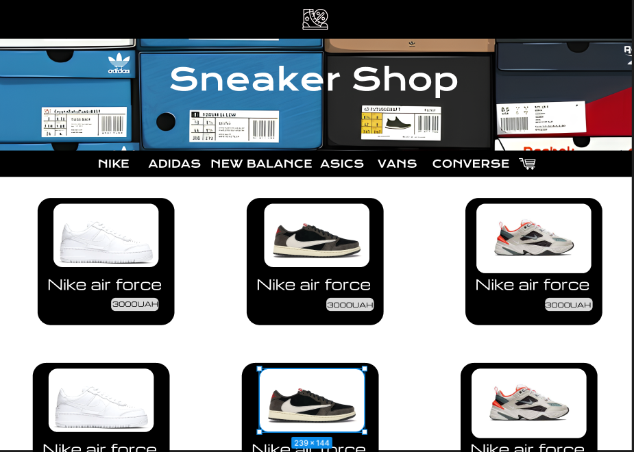

| Лабораторна Робота №1 |
Лабораторна Робота №2 |
Лабораторна Робота №3 |
Лабораторна Робота №4 |
Лабораторна Робота №5 |
Лабораторна Робота №6 |
Лабораторна Робота №7 |
Лабораторна Робота №8 |
Лабораторна Робота №9 |
| Опис предметного середовища |
Тема:Веб-застосунок онлайн магазин кросівок Мета:Створити зручний сайт онлайн магазину кросівок Опис Бізнес логіки:Вебсайт має інтуітивно зрозумілий та зручний інтерфейс. На головній сторінці показані новинки та популярні одиниці товару. Є окремі категорії з популярними брендами.Також є розділ з лімітованими та ексклюзивними кросівками. Крім того є сторінка з товарами за знижками. Кожен екземпляр представлений катринкою ,назвою та його ціною. коли користувач перходить на сторінку товару він може побачити більшу кількість фото,відгуки ,сітку розмірів і кольрів, після чого він може додати товар у корзину в певній кількості і пізніше або замовити товар що знаходиться в корзині або ж видалити його з неї. Є відповідна вкладка , де можна знайти більше іншформації про магазин , електронну адресу та номер для зв'язку. і пізніше або замовити товар що знаходиться в корзині або ж видалити його з неї.Є відповідна вкладка , де можна знайти більше іншформації про магазин ,електронну адресу та номер для зв'язку. Скріншот макету головної сторінки |
| Тема Мета Місце розташування лаби №1 |
|
| СТРУКТУРА ДОКУМЕНТА | |
| HTML-код ТАБЛИЦЬ | |
| HTML-код ФОРМИ | |
| HTML-код ЗОБРАЖЕННЯ | |
| ВИСНОВКИ |